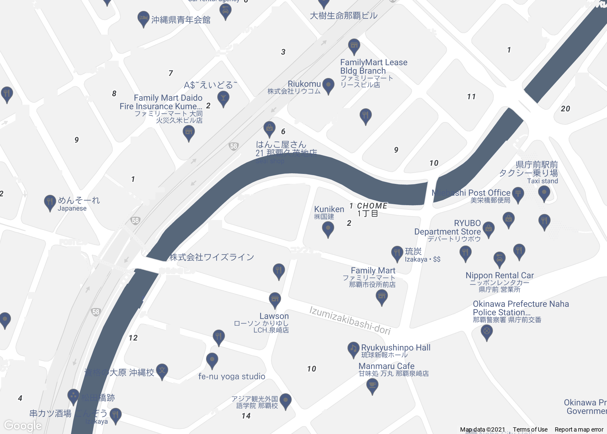
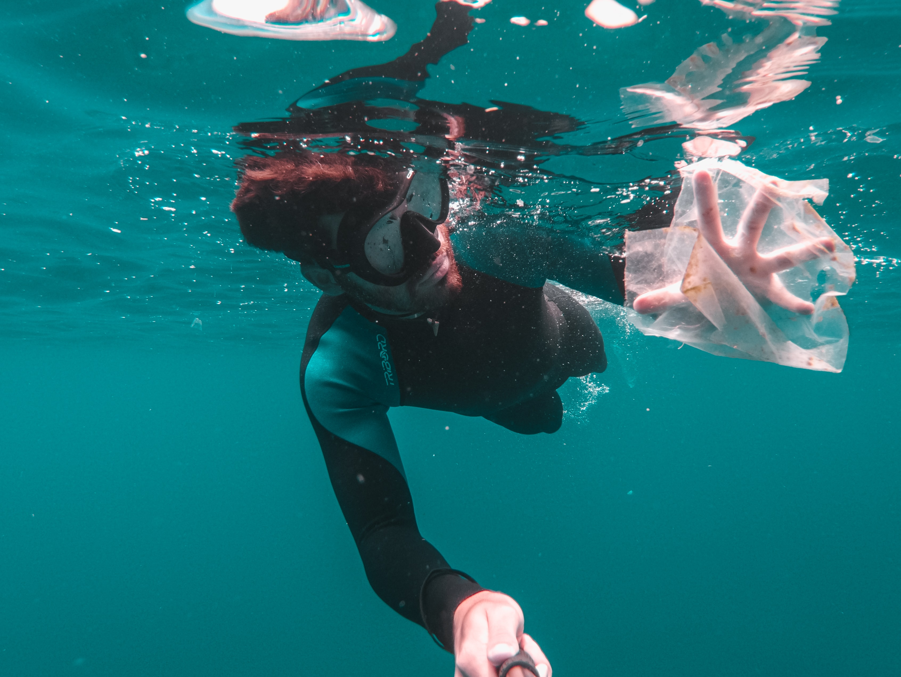
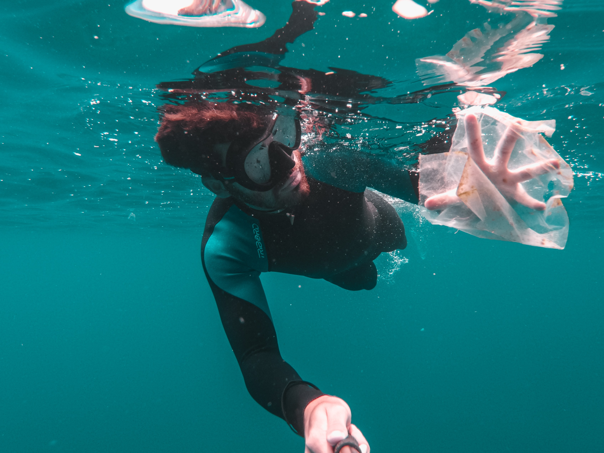

About Us
Greetings from Haisai Cruise and thank you for your interest in us, proudly Kumejima’s most awarded
operator.
Great Adventures’ history can be traced back over a century, growing from a small family operation with the
pioneering Taira Family, when they commenced a ferry service between main land Okinawa and Kume Island in
1890. The first Kume Island ferry service, and what was to become the forerunner to Great Adventures some 64
years later, was established in 1924.
Our friendly and knowledgeable crew are ready to share a wonderful day of discovery and adventure in this
very special part of the world.
Our Office
Address 12345, abcdefg, Naha OKinawa, Japan
Our Project
Special environmental measures are incorporated into our daily operations to protect and nurture the reef’s health.
Instead of using toxic anti-foul on vessels’ hulls they are cleaned manually on a weekly basis, waste water from reef platforms is pumped into sullage tanks on the vessels and removed from the reef area,
biodegradable detergents are specified and showers at the reef are designed without doors and shelves to conserve water usage and discourage soaps. We even operate two solar powered semi-submersibles.
 

If you are interested in our project, please donate today. Thank you for your support. It means the world!
Donate